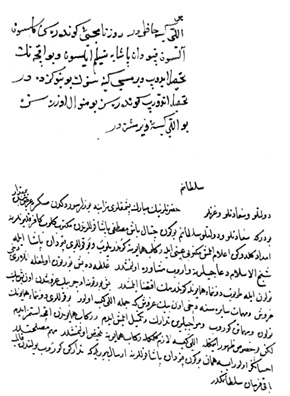

Belge 7: TKSA E.7002/32, veziriâzam ‘arzı
Belge 7
Özet:
Venedik kalyonlarına imdad gönderilmiş. Kapudân paşa ile şeyhülislâm ile müşâvere olundu. Galata’da beş burton gemi bulunmakta, onları navlun ile tutup donanmaya gönderelim. Burton başına üç bin guruş vermek gerekir. Diğer mühimmatla birlikte 50 kîse (5 milyon akça) gerekir. Parayı gönderdim, iç-hazineden yardım istemiyorum.
Kapudân paşaya emir gönderesiz, tedârikte bulunsun.
H. H.:
“Elli kîse para hazırdır, alıp Kapudân Paşa’ya gönderesiz, bu paranın iç-hazineye geri ödenmesinden, siz (veziriâzam) sorumlusunuz. Elli kîse para gönderilmiştir.”
Yorum:
Venedik donanmasının takviye olması ve saldırı ihtimali Naîmâ (İpşirli, IV, s. 1674), Çatalbaş Mustafa Paşa, Osmanlı donanması bozgunu: Haziran 1656.